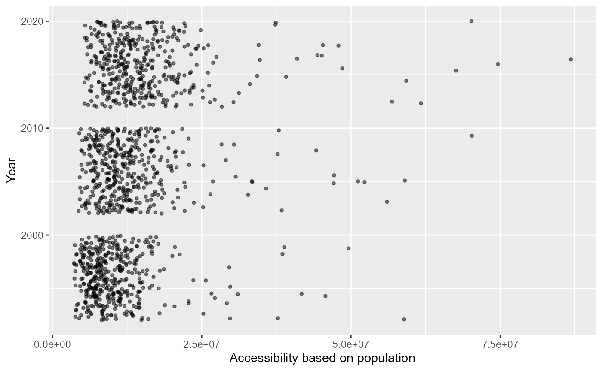
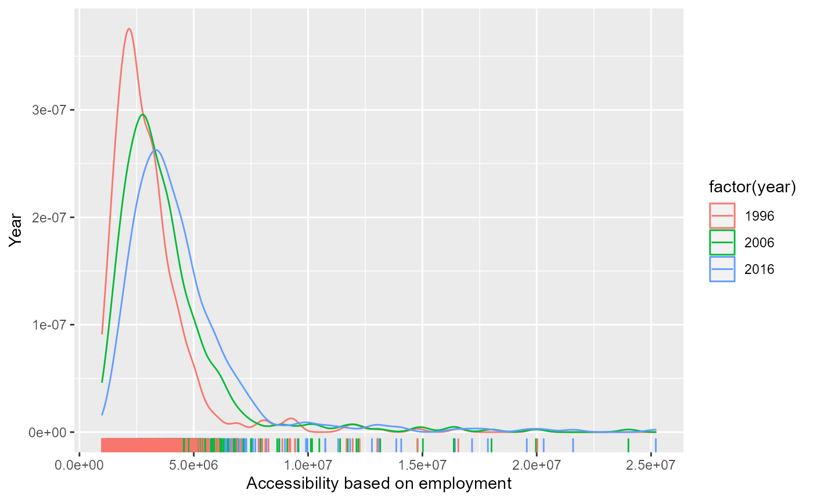
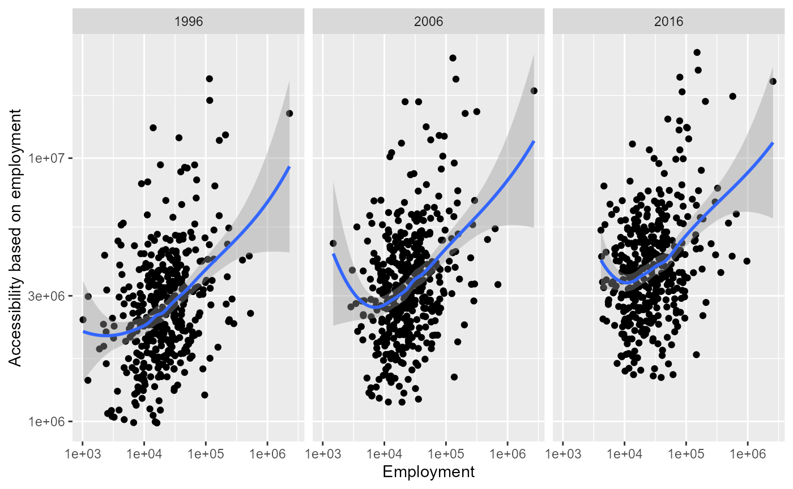

how to use this package
paccpack.Rmd
library(paccpack)paccpack package
The purpose of this package is to analyze the accessibility to the transportation network during 1996- 2016 in Iran which is consists of 31 provinces and 417 counties. The accessibility potential method was applied to calculate the accessibility at the county scale using two measures of population attractiveness and employment.
The railway lines and stations and the road network of Iran shapefiles were obtained from Iran’s Railway Company (IRC) and Iran Road Maintenance & Transportation Organization (RMTO) over the three periods of 1996, 2006, and 2016 respectively. In addition, the population and employment data of each county as the spatial unit of analysis for the years 1996, 2006, and 2016, respectively were used (Statistical Center of Iran, 1996, 2006, and 2016).
potential accessibility during 1996-2016
By examining the potential accessibility in terms of population and employment over the period from 1996 to 2016 shows that the value of the two indices has generally increased. Also, with the growth of population/employment and development of road and railway networks in each county and consequently the reduction of the shortest time distance, the potential accessibility in most counties has increased.

Despite that the values of the two indices have increased in all regions between 1996 and 2016, this increase was higher in the central regions of Iran(Tehran county), due to the more concentration of transportation network. While it was the lowest in most of the counties in the other part of the country.
ggplot(potential_accessibility, aes(x = pacc_p, colour = factor(year))) +
geom_density() +
geom_rug() + labs(
x = "Accessibility based on population",
y = "Year") 
The relationship between the potential accessibility and population/employment changes during 1996-2016
the relationship between accessibility through the transport network and the population/ employment over the period 1996-2016 revealed that the benefits of the improved accessibility have spread to neighboring regions due to the road and railway network development in the Tehran metropolitan region, central, northern coastal, northwestern regions, and parts of the eastern region’s neighboring regions. Thus, there is a significant relationship between the population/employment and potential accessibility in these regions.
